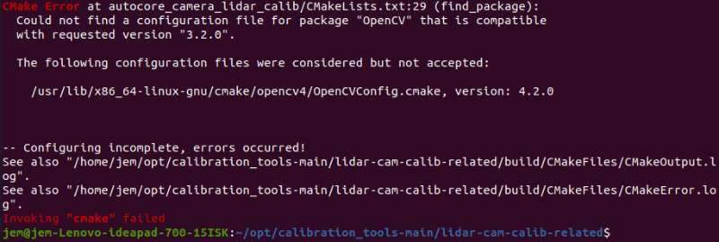
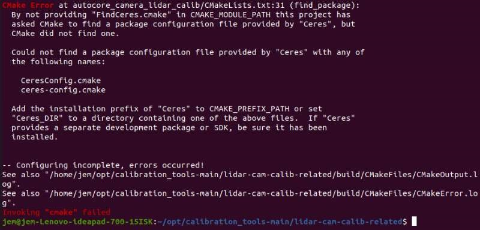
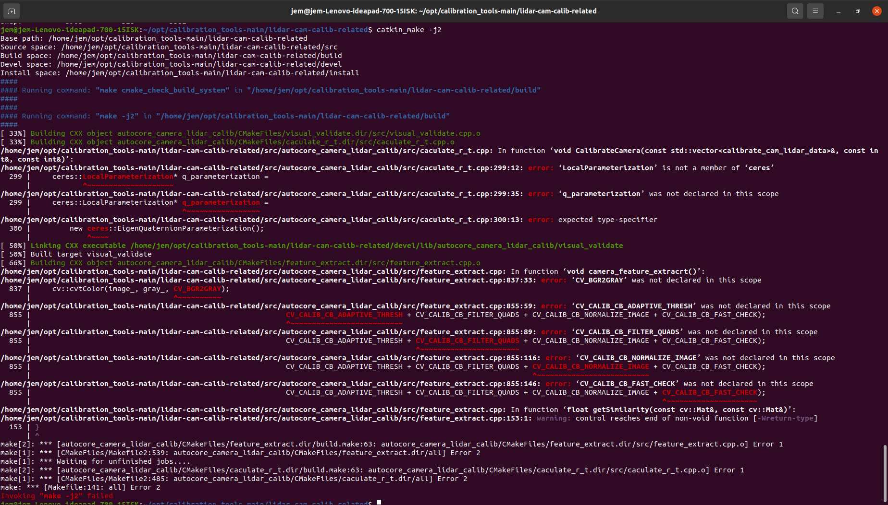
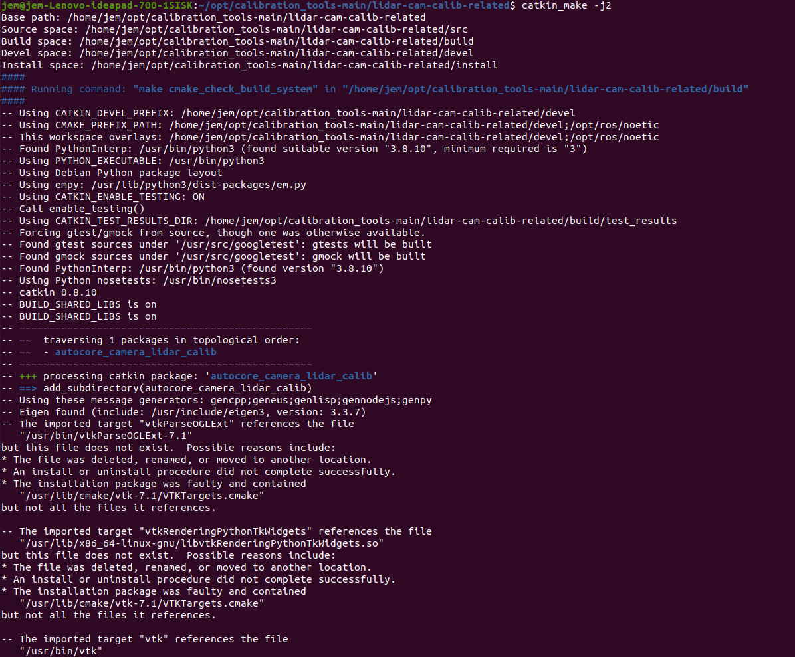
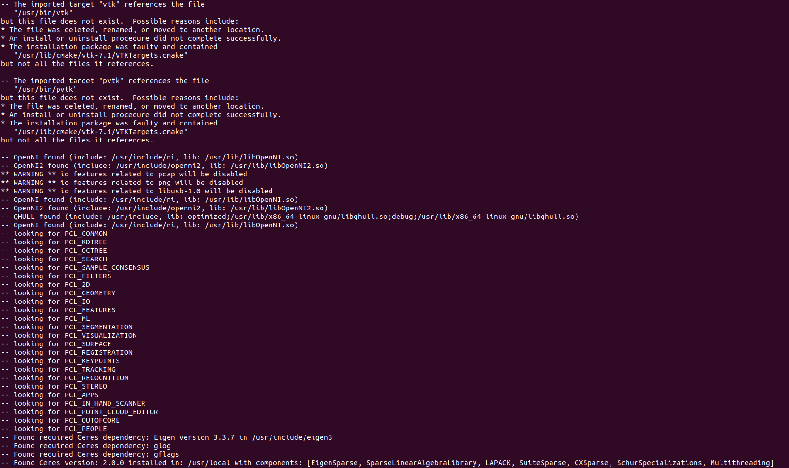
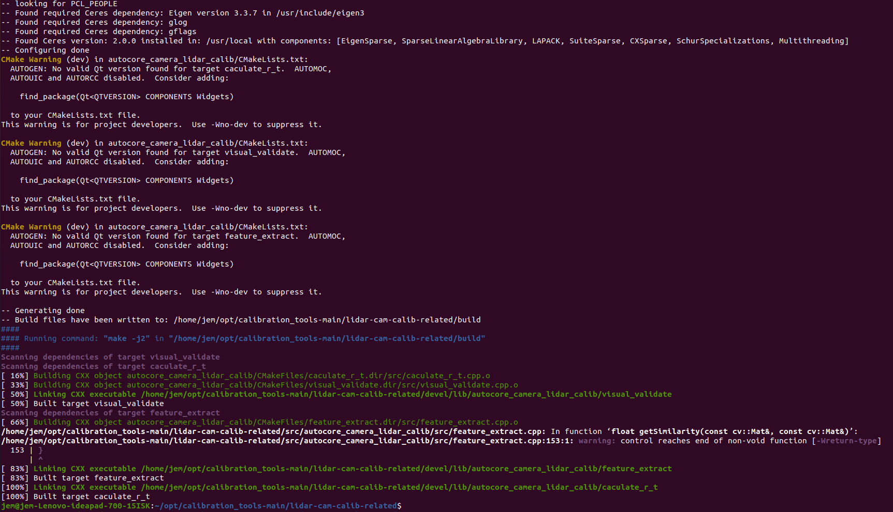

简介
Autoware.AI 1.10 版本后，标定工具箱需要另外安装。AutoCore开发了轻量级标定工具 LC-Calib，不依赖于Autoware环境，即不需要下载安装编译整个autoware环境，可独立运行。
依赖
以下为本文安装时，依赖及其所使用的版本，官方建议请参阅文末链接
- ROS1 noetic
- PCL 1.10.0
- Eigen 3.3.7
- OpenCV 4.2.0
本文使用的是 4.2.0 版本，但是建议3.2.0版本，因为使用 4.2.0 版本需要更新某些函数的书写 - Ceres 2.0.0
建议2.0.0版本，2.2.0版本会报错 - yaml-cpp 0.6.2
建议 0.6 版本，0.5 版本会报错
安装步骤
- 从 GitHub 上下载 calibration_tools-main.zip
- 解压到某一路径下，这里选择
/home/opt - 在终端执行命令：
1
cd lidar-cam-calibrelated
- 执行命令：
1
catkin_make
报错：

解决：在 CMakeLists.txt 中注释掉第 29 行，并添加：find_package(OpenCV 4.2.0 REQUIRED)
参考：compatibility with OpenCV V.4 · Issue #344 · dusty-nv/jetson-inference (github.com)报错：

解决：安装 ceres，最后make install的时候用sudo
参考：Could not find a package configuration file provided by “Ceres“-CSDN博客卡死
解决：首先 ctrl+c ，然后在编译时使用较少的核心数，执行：catkin_make -j2
参考：Catkin_make卡住，电脑死机_使用catkin build编译ros包时导致电脑内存用完卡死-CSDN博客报错：

- 关于 ceres 的错误：
'LocalParameterization' is not a member of 'ceres'
参考：ubuntu安装ceres、pyceres及对应报错解决-CSDN博客，解决：- 查看版本号，发现是 2.2.0，参考：查看Ubuntu中的OpenCV、Eigen、Ceres版本_查看ceres版本-CSDN博客
- 卸载 2.2.0 版本：
依次执行：sudo rm -r /usr/local/lib/cmake/Ceressudo rm -rf /usr/local/include/ceres /usr/local/lib/libceres.a- 删除 /home/opt 下的 ceres-solver-master 和 ceres-bin
- 安装 2.0.0 版本
- 下载 2.0.0 版本：ceres-solver - Git at Google (googlesource.com)
- 新建文件夹 ceres-solver-2.0.0
- 解压到刚刚新建的文件夹下：
tar zxf [文件夹名]
按照之前的步骤安装 ceres （依赖无需再装）
- 关于 OpenCV 的错误
参考：OpenCV 颜色空间转换参数CV_BGR2GRAY改变 - 阳光守望者 - 博客园 (cnblogs.com)，解决：在 feature_extract.cpp 中进行如下修改：- 855行：
CV_CALIB_CB_ADAPTIVE_THRESH改为cv::CALIB_CB_ADAPTIVE_THRESH - 855行：
CV_CALIB_CB_FILTER_QUADS改为cv::CALIB_CB_FILTER_QUADS - 855行：
CV_CALIB_CB_NORMALIZE_IMAGE改为cv::CALIB_CB_NORMALIZE_IMAGE - 855行：
CV_CALIB_CB_FAST_CHECK改为cv::CALIB_CB_FAST_CHECK
- 855行：
- 关于 ceres 的错误：
最终安装成功：



参考资料
- AutoCore - Intelligent Mobility
- calibration_tools/lidar-cam-calib-related at main · autocore-ai/calibration_tools (github.com)
- Autoware不同版本的学习及标定工具的使用-CSDN博客